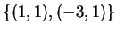
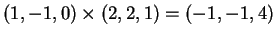
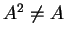
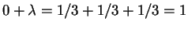
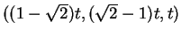

1)
Considere as matrizes
Resposta: Para calcular os autovalores calcularemos primeiro os polinômios característicos:
Para calcular os autovetores de 3, 2 e 6 devemos calcular, respectivamente,
No primeiro caso obtemos o sistema:
No segundo caso obtemos o sistema:
No último caso obtemos o sistema:
A matriz A não é diagonalizável, pois não é possível encontrar uma base de autovetores (no máximo é possível encontrar um autovetor l.i.).
A matriz B é diagonalizável, pois existe uma base de autovetores: .
Usando a base de autovetores de B temos,
2) Considere a matriz

2.a) Encontre todos os autovalores de F e todos os autovetores de F.
(0.5+0.5).
2.b) Encontre uma matriz R inversível, sua inversa R-1 e uma matriz D diagonal tais que F = RDR-1. ( 0.5+0.5+0.5).
Resposta:
O polinômio característico de F é
Os autovetores correspondentes são obtidos resolvendo os
sistemas:
O segundo sistema é,
O último sistema é,
Temos, normalizando a base, o seguinte
3) Considere a projeção ortogonal P no plano 2x+2y+z=0.
Escreva a matriz de P da forma B D B-1, onde D é uma matriz diagonal. Ache B, D e B-1 explicitamente. (B=1.0, D=1 e B-1=0.5).
Resposta:
O vetor normal ao plano de projeção (2,2,1),
que é um autovetor
de autovalor 0. Consideraremos agora dois vetores do plano ortogonais.
Obteremos assim dois autovetores l.i. de autovalor 1.
Tomando (1,-1,0) e
obtemos estes vetores.
Temos que
A expressão de P na base  é
é
4) Para cada uma das matrizes abaixo, verifique se é uma rotação ou uma projeção ortogonal, ou nem uma coisa nem outra. Para a rotação identifique o eixo, e para a projeção o plano ou a reta onde é feita a projeção.
(Cada identificação 0.5, o plano ou reta de projeção 0.5, e o eixo de rotação 0.5).
Resposta: Observamos que uma projeção ortogonal é uma matriz simétrica e uma rotação é ortogonal.
Como a matriz A não é ortogonal não pode ser uma rotação. Como uma projeção tem traço 1 e a matriz A tem traço 7não é projeção. O de outra forma. Uma projeção tem determinante 0, como a matriz A tem determinante -1, não é projeção. Ou de outra forma. Uma projeção P verifica P2=P, e .
Como a matriz C não é ortogonal não pode ser uma rotação. Como a matriz C não é simétrica não pode ser uma projeção.
A matriz B é simétrica e não é ortogonal. Logo a única possibilidade é que seja uma projeção. A matriz B tem todas as linhas iguais. Logo seu determinante é zero. Portanto, 0 é um autovalor. Os autovetores de 0 estão no plano x+y+z=0 (resolva o sistema correspondente). Logo 0 é um autovetor duplo (no mínimo é duplo, e como não pode ter multiplicidade 3, pois então a matriz seria nula ou teria traço zero, como preferir). O outro autovetor verifica  (o traço da matriz). Logo B tem autovalor 0 duplo e 1 simples. Logo, como é simétrica, é uma projeção na reta de vetor diretor o autovalor correspondente. Este autovetor é (1,1,1) (resolva o sistema ou veja que o vetor (1,1,1) pertence a reta de projeção).
A matriz D é ortogonal e não é simétrica.
Logo a única possibilidade
é que seja uma projeção. Como é ortogonal e estamos em dimensão
três tem um autovalor  .
.
Se D fosse uma rotação 1seria um autovalor. Se um fosse autovalor o sistema
a seguir teria solução não trivial (resolvendo este sistema
também obteremos o eixo de rotação):
Observe que, como a matriz é ortogonal, o plano de vetor normal é transformado nele próprio. Temos as seguintes possibilidades: ou a restrição de D a este plano é uma rotação ou não. No último caso haveria algum autovetor. Como D é ortogonal e estamos em um plano o vetor perpendicular também seria um autovetor. Logo D teria uma base ortogonal de autovetores, e em tal caso, seria simétrica. Como isto não ocorre, temos que D é uma rotação.
Dos raciocínios anteriores obtemos que se
trata de uma rotação de eixo a reta
,
 .
.